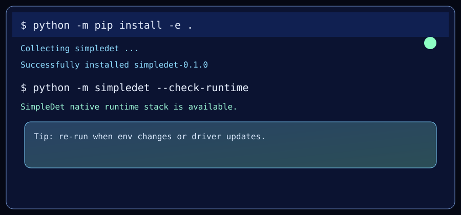
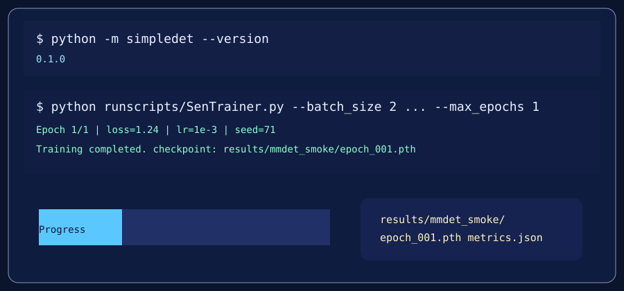
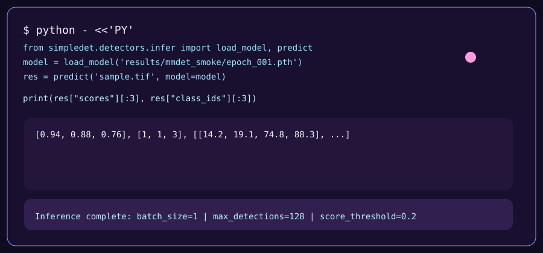

Suite-driven experiment flow
build_detector(...)
-> compile_detector_spec(...)
-> ObjectDetectionPipeline(detector_spec=...)
-> build()
-> train()
-> best checkpoint
-> evaluate() / test()These diagrams are full-width visual summaries of the current workflow. Read them together with the conceptual pages: the diagrams show the shape of the process, while the docs explain the meaning of each step.
build_detector(...)
-> compile_detector_spec(...)
-> ObjectDetectionPipeline(detector_spec=...)
-> build()
-> train()
-> best checkpoint
-> evaluate() / test()load_dataset()
-> train(config=...)
-> epoch_001.pth
-> load_model()
-> predict()

